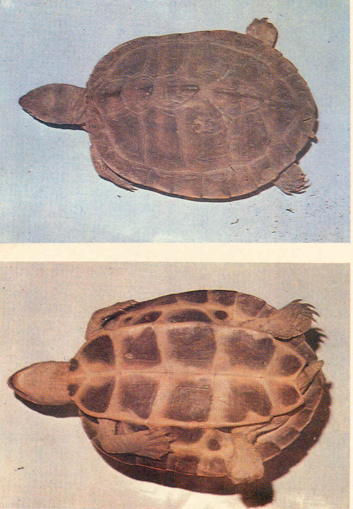

|
Digitized
Inventory of Animal Resources: Reptilia |
Kachuga tentoria (Gray 1834 )
Taxonomic
Details
----- Scientific Name
----- Classification
----- Synonyms
----- Common Names
Other
Biological Details
----- Habit and
Habitat
----- Distribution
---------- Extent of
Occurrence
---------- Area of
occurrence
---------- Altitude
---------- Population
-----
Conservation Status
-----
Diagnostic
Features
-----
Breeding system
Miscellaneous
Information
Literature
Scientific Name : Kachuga tentoria (Gray 1834 )
Family :
Classification:
Synonyms:
Common Names: South
Indian Roofed Turtle
Other Biological Details Threat : Possibly vulnerable on account of habitat destruction and large scale exploitation of eggs and adult for food
Prefer to live in ponds and occasionally bask on stones and logs projecting form the water. They are equally comfortable on land also and sometimes are found far away from water. Herbivorous.
Distribution: Mahanadi, Godavari and Krishna River Systems of Peninsular India
Extent of Occurrence
Area of occurrence: Mahanadi, Godavari and Krishna River Systems of Peninsular India
Altitude:
Population: Not
Known
Conservation status: Vulnerable due to large scale habitat destruction. Nominally protected by Legislation.
Size : Small species, adult female is almost similar to K tecta and never reaches beyond 19 cm.
Body : Head is moderately small and pointed, shorter than the orbit and feebly projecting beyond the lower jaw. Skin of the posterior part of the head is divided into large shields.
Limbs : Limbs are with fully and broadly webbed digits and have transeversly enlarged scales.
Tail : Tail remains quite short throughout its life and shows no difference between juveniles and adults.
Carapace : Elevated, and round in adults. Vertebral keel is prominent and abruptly forms a strong spinous process at the posterior margin of the third shield. Posterior margin of the carapace is not serrated. Plastron is as long as carapace, angulate laterally, truncate anteriorly, hind plastral lobe is smaller than the shell opening, notched posteriorly, its length is slightly less or almost equal to the width of the plastral bridge.
Colouration : Dorsal colour is pale olivaceous, yellow streaks on neck are absent or indistinct. Head is dull olive and devoid of coloured spots on the temporal region, a distinct red marking behind the tymphanum, limbs are devoid of spots and dark bars at the back of the thighs are numerous.
Breeding system:.Nesting : Nothing is known about its breeding habit.
Three subspecies Kachuga tentoria tentoria ( Gray,1834 ) Peninsular tent turtle; Kachuga tentoria circumdata Mertens, 1969 : Pink-ringed tent turtle; Kachuga tentoria flaviventer ( Blyth,” 1855” 1856 ) Yellow bellied tent turtle are recognized.
